前几章介绍了多项基础优化，包括调整 memory access、提高 parallelism、让 computation 与 data transfer overlap、改善 occupancy，以及减少 warp stall。这些方法有助于覆盖 latency 并缓解 bottleneck。现代 GPU 还提供 advanced hardware feature 与 execution model，可在这些基础上进一步优化。
本章将介绍一些更高级的 CUDA 技术，例如 warp-specialized pipeline、支持 grid-level 和 cluster-level synchronization 的 cooperative group、循环处理 dynamic work queue 的 persistent kernel，以及使用 distributed shared memory（DSMEM 或 DSM）和 Tensor Memory Accelerator（TMA）multicast 的 thread block cluster（原文称 cooperative thread array cluster [CTA]，术语订正见下文）。概括来说，thread block cluster 是一组具有 cluster-level co-scheduling guarantee 的 thread block；在支持该特性的 architecture 上，它们可通过 DSMEM 访问彼此的 shared-memory allocation，包括 read、write 和 atomic operation。原文的别名并不准确：CTA 通常指 cooperative thread array，也就是 CUDA thread block；这里讨论的是由多个 CTA 组成的 CTA cluster。
这些方法可以在不需要 host 逐阶段介入的情况下，使部分 memory access 与 compute operation overlap，也能让同一 cluster 内的 thread block 共享 on-chip data。它们可能提高 SM utilization，但不能保证每个 SM 始终 fully utilized；实际结果仍受 resource footprint、cluster size、grid shape 和 workload 限制。
理解这些 modern GPU execution model 后，下一章将进一步讨论使用 CUDA stream 构建的 inter-kernel pipeline。下一章的跨 kernel pipeline 建立在本章所述 intra-kernel optimization 的基础之上。
Intra-kernel pipelining 是指在一次 kernel execution 内让 memory operation 与 computation overlap 的一组技术。（下一章将讨论 inter-kernel pipelining，即让不同 stream 中多个 kernel 的工作彼此 overlap。）
其核心思想是把 kernel 组织成可重叠推进的 stage：在载入或存储一块 data 时，处理此前已经载入的数据。不同 stage 可同时作用于不同 tile 或 data chunk，从而可能提高 throughput 并覆盖部分 latency；能否真正并发取决于 instruction dependency、hardware pipeline 和 resource availability。
传统上，GPU 依靠 warp-level multithreading 隐藏 latency。当一个 warp 因 memory load 而 stall 时，scheduler 可以选择其他 ready warp 执行 computation。这是 single instruction, multiple threads（SIMT）execution model 中 latency hiding 的基础。
Intra-kernel pipelining 在此基础上进一步安排 memory 与 compute，使它们在同一 kernel 内、某些情况下甚至在同一 warp 的 instruction stream 中交错推进。它通过 fine-grained coordination 错开 memory load 与 computation。
CUDA Pipeline API 可协调 asynchronous memory transfer 与 computation，但原文所称“无需任何 __syncthreads()”并非通则：是否需要额外 block-level synchronization，取决于 pipeline scope、参与线程、shared-memory access pattern 以及 API contract。常见的 intra-kernel pipelining 组织方式包括 double buffering 与 warp specialization。
在 double-buffered（two-stage）pipeline 中，通常由一组线程协作推进 producer/consumer stage；在 warp-specialized pipeline 中，不同 warp 被分配为 memory loader、compute 或 memory storer 等角色。具体选择取决于 workload、architecture 和 performance target。表 10-1概括了这两种使用 <cuda/pipeline> 的组织方式；它们是设计模式，不是彼此排斥的独立 API variant。
| 组织方式 | 适用场景 | 主要用途 |
|---|---|---|
| 双缓冲流水线 | 基于 loop 的 tiling 与 double buffering | 在同一 warp 或 block 内安排 load 与 compute overlap |
| Warp-specialized pipeline（例如 memory loader、compute、memory storer 三个 stage） | 包含多个不同 warp role 的 persistent kernel（本例为三个） | 把 warp 分配给 memory load、compute 和 memory store 等不同 role/stage |
可以使用 C++ Pipeline API 实现传统的 double-buffered tiling pattern：实例化一个 two-stage pipeline，尝试让 memory load 与 computation overlap。具体来说，可以声明一个 two-stage cuda::pipeline_shared_state<cuda::thread_scope_block, 2> object，并用 cooperative groups（稍后讨论）取得的 thread-block group 创建 block-scoped pipeline。这本质上是 producer-consumer pattern，如图 10-1所示。
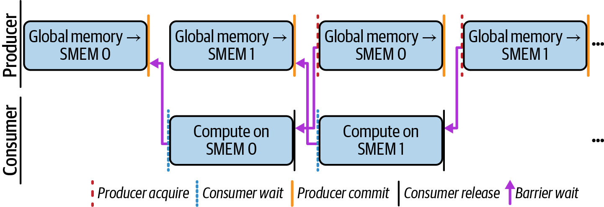
下面列出关键 CUDA Pipeline API call，随后给出一个使用该 API 的 double-buffered cooperative-tiling kernel 示例：
pipe.producer_acquire()
等待并取得下一个可供 producer 写入的 pipeline stage
pipe.producer_commit()
提交当前 producer stage，使此前关联到该 stage 的 asynchronous operation 可由 consumer 等待
pipe.consumer_wait()
等待下一个已提交 consumer stage 的 operation 完成，避免读取尚未就绪的数据
pipe.consumer_release()
释放当前 consumer stage，使其可再次供 producer 使用
Two-stage pipeline 的目标是让 global-memory load 与 computation overlap。概念图可让一个 producer role 把下一 tile asynchronous prefetch 到 shared memory，同时 consumer role 处理已就绪的 tile。对于满足 alignment、size、collective participation 等契约的 global-to-shared copy，cuda::memcpy_async 可能使用 hardware-accelerated asynchronous copy path；但不能笼统保证每个 cooperative call 都按“每线程一条 cp.async”lowering。
原文把 Stage 0 描述为一个 warp loading、其余 warp 在 Stage 1 computing，但下方清单并未实现这种 warp specialization：所有线程沿同一控制流调用 producer 与 consumer API。Double buffering 仍可能让先前发出的 copy 与后续 compute overlap，从而覆盖部分 DRAM latency；是否实现及覆盖程度需要检查 generated code 与 profiler，如图 10-2的概念时序所示。
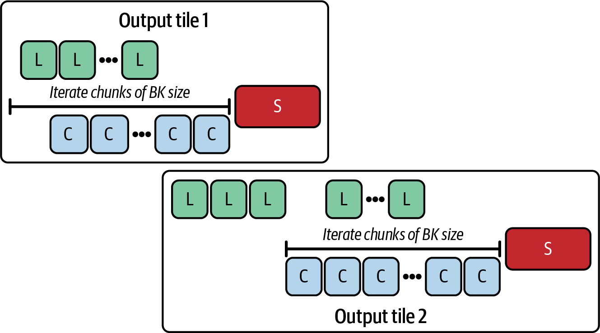
这种 pattern 可能提高 SM utilization 并缩短 kernel time，但 kernel 属于 compute-bound 还是 memory-bound，取决于 operation、tile size、resource pressure 与 overlap efficiency。原文以 FlashAttention-3 约达到 peak FP16 FLOP/s 的 75% 为例；该数字来自特定 Hopper workload、precision、shape 与计数口径，不能当作 attention kernel 或 pipelining 的通用上限。
下面是使用 CUDA C++ Pipeline API 的 two-stage double-buffering 示例。它演示 fine-grained producer-consumer synchronization 的基本形式，但按展示文本存在 collective-copy contract 与 benchmark provenance 问题，不能直接作为正确、可复现的 GEMM implementation：
#include<cuda/pipeline>#include<cooperative_groups.h>#include<algorithm>namespacecg=cooperative_groups;#ifndef TILE_SIZE#define TILE_SIZE 32#endif#ifndef STAGES#define STAGES 2// 2 = double buffer, 3 = triple buffer, etc.#endif__device__floatcomputeTile(constfloat*__restrict__A_sub,constfloat*__restrict__B_sub,inttx,intty){floats=0.0f;#pragma unrollfor(intk=0;k<TILE_SIZE;++k){s+=A_sub[ty*TILE_SIZE+k]*B_sub[k*TILE_SIZE+tx];}returns;}extern"C"__global__voidgemm_tiled_pipeline(constfloat*__restrict__A_global,// [M x K]constfloat*__restrict__B_global,// [K x N]float*__restrict__C_global,// [M x N]intM,intN,intK){cg::thread_blockcta=cg::this_thread_block();// Shared memory layout: A[STAGES] then B[STAGES]extern__shared__floatshared_mem[];float*A_buf[STAGES];float*B_buf[STAGES];{float*p=shared_mem;for(ints=0;s<STAGES;++s){A_buf[s]=p;p+=TILE_SIZE*TILE_SIZE;}for(ints=0;s<STAGES;++s){B_buf[s]=p;p+=TILE_SIZE*TILE_SIZE;}}__shared__cuda::pipeline_shared_state<cuda::thread_scope_block,STAGES>state;autopipe=cuda::make_pipeline(cta,&state);inttx=threadIdx.x,ty=threadIdx.y;intblock_row=blockIdx.y*TILE_SIZE;intblock_col=blockIdx.x*TILE_SIZE;floataccum=0.0f;intnumTiles=(K+TILE_SIZE-1)/TILE_SIZE;// Prologue: load first STAGES tiles (or fewer if short)for(ints=0;s<std::min(STAGES,numTiles);++s){intaRow=block_row+ty;intaCol=s*TILE_SIZE+tx;intbRow=s*TILE_SIZE+ty;intbCol=block_col+tx;pipe.producer_acquire();if(aRow<M&&aCol<K){cuda::memcpy_async(cta,A_buf[s]+ty*TILE_SIZE+tx,&A_global[aRow*K+aCol],cuda::aligned_size_t<32>(sizeof(float)),pipe);}else{A_buf[s][ty*TILE_SIZE+tx]=0.0f;}if(bRow<K&&bCol<N){cuda::memcpy_async(cta,B_buf[s]+ty*TILE_SIZE+tx,&B_global[bRow*N+bCol],cuda::aligned_size_t<32>(sizeof(float)),pipe);}else{B_buf[s][ty*TILE_SIZE+tx]=0.0f;}pipe.producer_commit();}// Steady statefor(inttile=0;tile<numTiles;++tile){ints=tile%STAGES;// Block-scope waitpipe.consumer_wait();accum+=computeTile(A_buf[s],B_buf[s],tx,ty);pipe.consumer_release();// Prefetch next tile into the same slot s (ring buffer)intnextTile=tile+STAGES;if(nextTile<numTiles){intaRow=block_row+ty;intaCol=nextTile*TILE_SIZE+tx;intbRow=nextTile*TILE_SIZE+ty;intbCol=block_col+tx;pipe.producer_acquire();if(aRow<M&&aCol<K){cuda::memcpy_async(cta,A_buf[s]+ty*TILE_SIZE+tx,&A_global[aRow*K+aCol],cuda::aligned_size_t<32>{sizeof(float)},pipe);}else{A_buf[s][ty*TILE_SIZE+tx]=0.0f;}if(bRow<K&&bCol<N){cuda::memcpy_async(cta,B_buf[s]+ty*TILE_SIZE+tx,&B_global[bRow*N+bCol],cuda::aligned_size_t<32>{sizeof(float)},pipe);}else{B_buf[s][ty*TILE_SIZE+tx]=0.0f;}pipe.producer_commit();}}// Epilogue: final store (guard tails)intcRow=block_row+ty;intcCol=block_col+tx;if(cRow<M&&cCol<N){C_global[cRow*N+cCol]=accum;}}
代码先使用 cooperative groups（CG，稍后讨论）取得当前 thread block 的 handle，然后创建绑定到该 block 的 two-stage cuda::pipeline object。Shared state 必须在相关 asynchronous operation 之前正确初始化，而且参与 collective operation 的线程必须遵守相应 convergence 与 argument contract。
Kernel 通过 extern __shared__ float shared_mem[] 为 A、B tile 分配一块 contiguous dynamic shared-memory region，再用 pointer arithmetic 将其分成四个 subregion：两个 A buffer（float* A_buf[2]）和两个 B buffer（float* B_buf[2]）。这提供 double-buffer storage，不涉及额外 runtime device allocation；host launch 时仍须配置足够的 dynamic shared-memory byte。
进入 main loop 前，代码尝试预取前 STAGES 个 tile，并按 producer_acquire() → memcpy_async() → producer_commit() 的顺序操作 pipeline。随后用 consumer_wait() 等待当前 consumer stage 的 asynchronous operation 完成，并在使用后调用 consumer_release()。
这套 pipeline synchronization 只在 API contract 得到满足时才建立 stage reuse 所需的 ordering，不能概括为一个“initial barrier”永久取代后续所有 __syncthreads()。是否还需要其他 synchronization，取决于 participating thread 与 shared-memory access pattern。
原文称每轮先调用 pipe.producer_acquire() 取得下一 buffer，再为 A、B tile 各发出一次 cuda::memcpy_async，并通过 cuda::memcpy_async(..., pipe) 把 copy 关联到 pipeline。实际清单的 steady-state 顺序却是先 compute/release 当前 stage，之后才 enqueue next tile；潜在 overlap 发生在后续 iteration，并非同一 iteration 内由独立 producer warp 与 consumer warp 并发。
这些 asynchronous copy 只有在 access、tiling 与 API contract 均正确时才可能与 compute overlap。清单中的 memcpy_async 却在 per-thread 边界分支中被不同线程调用或跳过，并接收不同 pointer；这不符合 block-group collective copy 的通常用法。随后调用 pipe.producer_commit() 也不能修复 convergence、argument 或 alignment contract，因此不能据此断言 pipeline 始终 filled，或 copy 不会 block 整个 thread block。
原文声称“其他 warp”调用 pipe.consumer_wait()，且只有依赖由 s = tile % STAGES 索引的 stage 的线程 stall；清单实际上让整个 CTA 中所有线程操作同一个 block-scoped pipeline。Wait 完成后，各线程调用 computeTile(...)，计算自己 output element 的 K-tile partial dot product，而不是每线程计算一个完整 TILE_SIZE x TILE_SIZE tile。变量 s 也未传给 wait；stage progression 由 pipeline sequence 决定。
完成当前 buffer 的 computation 后，参与线程调用 pipe.consumer_release()，使相应 stage 可供后续 producer reuse。Fine-grained pipeline 可以避免不必要的 synchronization，但是否减少 block-wide stall 或最大化 overlap 仍需由合法实现和 profiler 证明。
每轮结束时，ring buffer 以 stage index 循环。下一次 prefetch 使用 nextTile = tile + STAGES，并写入 slot s；该 slot index 按 STAGES 取模循环。
Producer/consumer sequence 遍历 K dimension 的 tile。每个 thread 的 accumulator 对应一个 output element 的完整 K-dimension dot product，而不是原文所称“完整 TILE_SIZE x TILE_SIZE dot-product result”；整个 CTA 的线程集合才共同覆盖 output tile，并将各自结果写入 C_global。
Double buffering 中，每个 asynchronous copy（memcpy_async）必须满足 copy contract，并与适当的 producer_commit() 和 consumer_wait() 配对，才能保证 consumer 在 data ready 后读取。Compiler 可能优化某些简单 pattern，但不会自动修复语义错误，也不保证自动构造完整 multistage pipeline。
应使用与 GPU architecture、tool version 和 copy path 对应的 Nsight Compute metric，验证 pipeline 是否按预期执行。除 achieved occupancy 与 shared-memory bank conflict 外，还应检查 asynchronous-copy request、barrier wait、memory throughput、eligible warp 和 kernel duration。优化目标是缩短目标 workload 的时间，而不是要求 SM Active percentage 必然上升或 stall metric 必然下降；DRAM latency 能覆盖多少还取决于 dependency、occupancy、access pattern、resource pressure 和 shared-memory behavior。
原文称该 double-buffered scheme 比 naive tiling 快约 2×，并在表 10-2中给出对比。但表中数值明确是 illustrative，且当前代码存在上述 correctness/contract 问题，因此不能将其视为该清单的实测结果。
| 指标 | 朴素分块 | 两阶段双缓冲流水线（double_buffered_pipeline） |
|---|---|---|
| 内核执行时间 | 41.3 ms | 20.5 ms（相对于 naive 约快 2×） |
| SM 活跃百分比 | 68% | 92%（相对于 naive 增加 24 percentage point） |
注意：所有 metric table 中的数值都只是用于解释概念的示意值。不同 GPU architecture 上的实际 benchmark 结果请参阅 GitHub repository。
若把这些示意值当作假设场景，gemm_tiled_pipeline 的时间由 41.3 ms 降至 20.5 ms，约为 2× speedup，SM Active 则由 68% 增至 92%，即增加 24 percentage point；原文写“增加 24%”容易与 relative increase 混淆。由于没有给出 device、shape、compiler、launch configuration、naive baseline 和可复现实测，本表不能证明 pipe.producer_commit()/pipe.consumer_wait() 使 pipeline 始终 filled，也不能证明这些数字来自上方清单。
Warp specialization 在 double buffering 的基础上，把不同 operation role 分配给不同 warp，例如由 producer warp 协调 data movement（如 TMA），由 consumer warp 执行 compute（如 Tensor Core MMA）。这不同于让同一组 warp 同时承担 load 与 compute，如图 10-3所示。
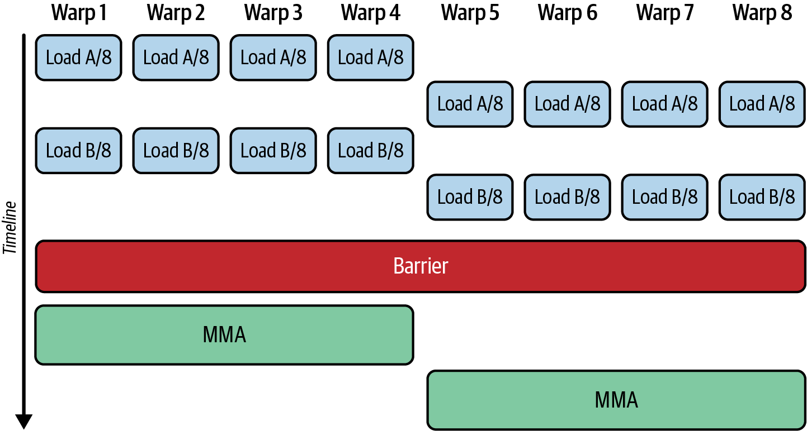
这种 specialization 让不同 warp set 执行各自的 instruction sequence，从而减少单个 warp 内不同 role 的交错；但 instruction 能否连续 issue 仍受 dependency、scheduler、execution-pipeline availability 和 barrier 限制。可以让一组“producer”或“memory”warp 使用 cuda::memcpy_async 等机制 asynchronous prefetch tile，再由“consumer”或“compute”warp 执行 computation，如图 10-4所示。
图中把 4 个 warp 分配为 producer，其余 8 个 warp 分配为 consumer。Producer/consumer 的数量可以不同，但合法且高效的比例取决于 threads per CTA、warpgroup requirement、pipeline rate、resource usage 和 target architecture，并非任意配置都可行。
原文称“每个 warp 都有自己的 scheduler”，这不准确。一个 SM 通常包含多个 warp scheduler，每个 scheduler 管理一组 resident warp，并从 ready warp 中选择 instruction。若 architecture 的 issue partition 与 execution pipeline 允许，不同 scheduler 可能在同一 cycle 从不同 warp 发出 memory、math 或其他 instruction；但 load、math、store 能否同时 issue 并无普遍保证。
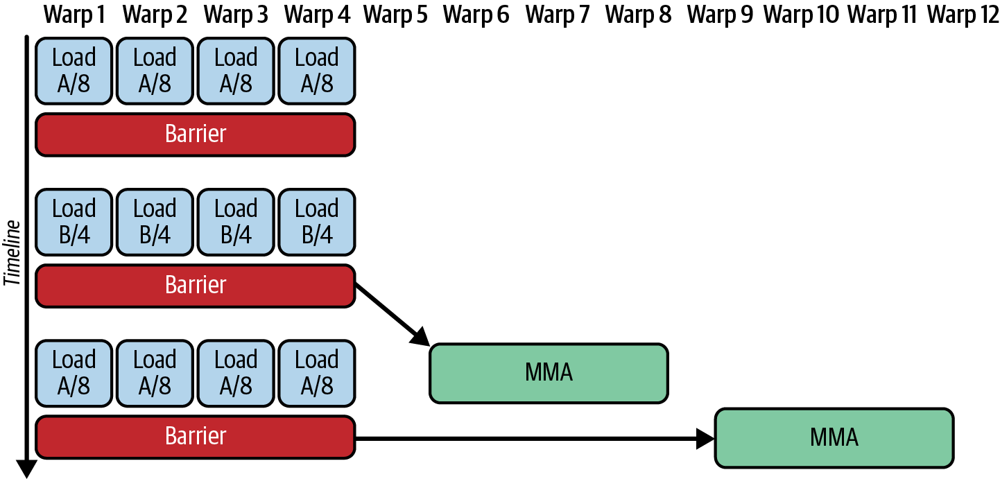
这种组织方式可增加同一 thread block 内不同 ready warp 向不同 execution pipeline 提供 instruction 的机会。原文将其称为 thread-block-level multi-issue，并断言 single-warp double buffering 不可能做到；更准确地说，单个 warp 的 issue capability 受 architecture 限制，而多个 warp role 可以提供更多 independent ready instruction，但实际 issue width 与 concurrency 仍由硬件决定。
一种 warp-specialization pattern 使用三类 warp：“loader”“compute”和“storer”。Loader warp 把 tile 推入 pipeline queue，compute warp 处理各 tile，storer warp 写出 result，如图 10-5所示。具体 implementation 还需要 matching barrier、buffer ownership 与 memory-order protocol。
Warp-specialized pipeline 可能减少 sequential load-and-compute loop 中仍然存在的 idle cycle。对于 long-running loop 和 persistent kernel，role coordination 与 data handoff 的开销可在多次 iteration 中摊销，因此 data transfer 与 computation 的 overlap 可能提高 GPU utilization；但 barrier cost、role imbalance 或资源占用也可能抵消收益。
一篇关于 warp scheduling 的论文在其特定 kernel 与硬件上展示了接近完整的 memory/compute overlap。该 workload 原先具有分离的 memory phase 与 compute phase，两者交替成为 bottleneck；应用 warp specialization 后，profiling 显示 SM memory subsystem 与 compute unit 在大部分测量区间内同时活跃。这个结果依赖论文中的 workload、schedule 和 metric，不能外推为通用保证。
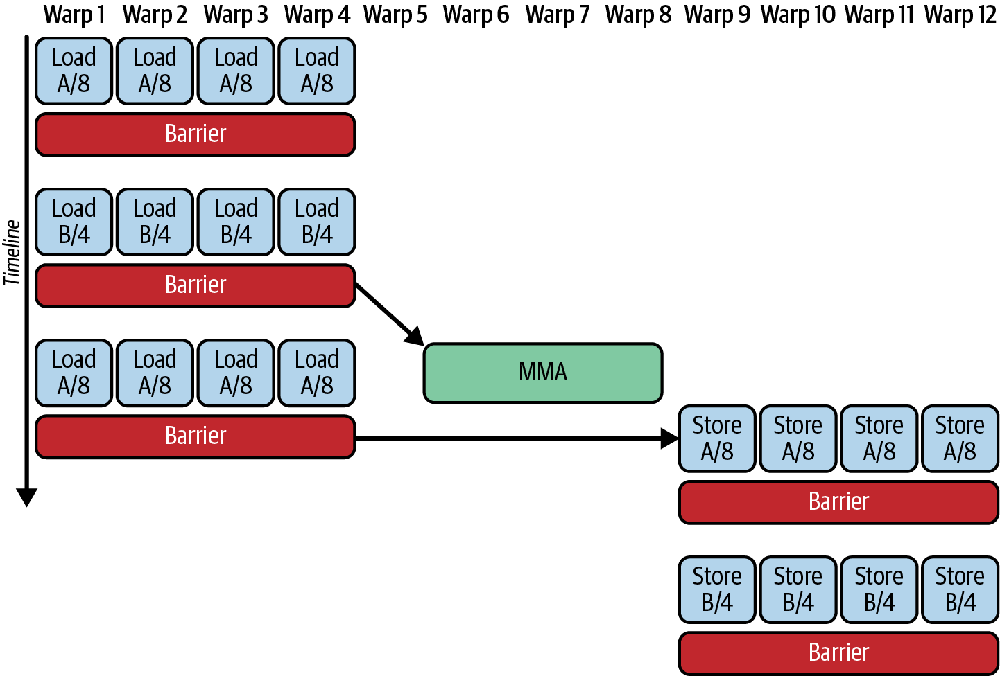
在该研究的 profiling 中，使用 warp specialization 前，L2 bandwidth utilization 与 Tensor Core utilization 的活跃区间错开；使用后，两者的活跃区间更多重叠，并提高了 effective throughput。这说明 warp specialization 能在某些已使用 asynchronous pipeline 的 workload 中进一步减少 idle time，但收益大小必须由具体 timeline 与 runtime 验证。
另一种 pattern 修改了 three-role warp-specialized pipeline：仍用一组 warp 充当 memory loader，同时让两组 consumer warp 在 compute 与 memory-storer role 之间“ping-pong”。CUTLASS 的特定 Hopper GEMM schedule/示例中使用名称 gemm_tma_warpspecialized_pingpong 表示这类组织方式，如图 10-6所示；具体 API 名称与 availability 依 CUTLASS version。
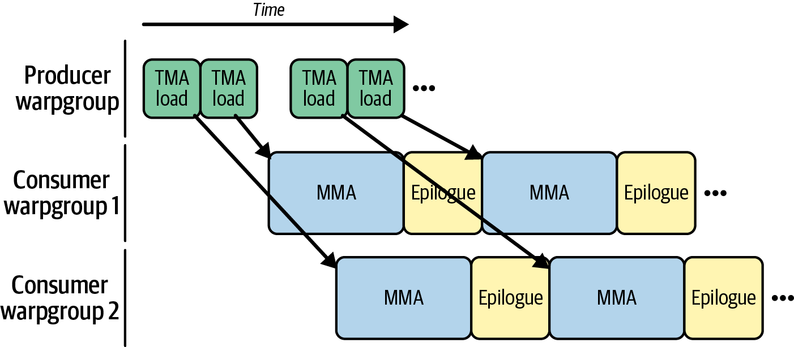
图中两组 consumer 的 MMA/epilogue phase 交错推进。MMA 后的 epilogue 可包含 accumulation、scaling、写回 global memory，或在线程/warp 间重新排列 result；control flow 还可推进 tile pointer、更新 loop counter，并通过 synchronization signal 允许后续 TMA load 或 MMA 继续。并非所有 per-MMA epilogue 工作都必须在“下一条 MMA”启动前串行完成；依赖关系取决于 buffer、accumulator 与 schedule。
图中没有显示 MMA 前的 prologue。Prologue 可先发出若干 TMA request，把 global-memory tile 搬入 shared memory 并填充 pipeline，随后 consumer 再按 MMA operand contract 从 shared memory 取数或使用相应 tensor-core data path。原文称 TMA 直接把 data 搬入 register 不准确。
在适合的 workload 中，warp specialization 可以进一步提高 performance。FlashAttention-3 把部分 speedup 归因于 warp-specialized pipeline：它让 GEMM、softmax 与 data movement 更充分地 overlap。但其 achieved FLOP/s、利用率与收益依 Hopper、head dimension、sequence length、dtype 和 benchmark configuration，不能概括为让所有 hardware unit 始终 busy 或普遍达到 near-peak FLOP/s。
此外，第 13 章和第 14 章将讨论 PyTorch compiler。某些 PyTorch/TorchInductor backend 或 CUTLASS integration 可为 supported operation 选择 warp-specialized schedule，并使用 architecture-appropriate barrier 协调 loader 与 compute role。torch.compile 和 Triton 是否生成此类 kernel，取决于 version、backend、architecture、operator、shape 和 heuristic；它们不会为每个 operator 启用 warp specialization。“Low-cost”也不是固定属性，barrier overhead 应纳入 profiling。
当 workload 存在可分离的 producer/consumer role、需要隐藏 latency，且额外 role coordination 有望摊销时，可以评估 warp specialization，尤其是在 simpler schedule 无法覆盖 memory-load latency 时。若 kernel 很小、缺少 independent compute，或 role/barrier/resource overhead 较高，simpler double buffering 可能以较低代码复杂度取得相近甚至更好的效果。应以 correctness、kernel time 和端到端 benchmark 决策。
Warp specialization 可建立在 CUDA Pipeline API 之上，使用 fine-grained producer/consumer primitive 协调 specialized warp。这些 call 可与 cuda::memcpy_async 等 asynchronous copy 配合；是否避开 full-block barrier，取决于采用 unified 还是 partitioned pipeline 以及具体 synchronization design。
CUDA Pipeline API 的 producer/consumer call 包括 pipe.producer_acquire()、pipe.producer_commit()、pipe.consumer_wait() 和 pipe.consumer_release()。Partitioned pipeline 可让明确的 producer/consumer role 只参与所需 handoff；但本节清单使用 unified CTA pipeline，其 primitive 是 participating CTA threads 的 collective，不能描述为只同步特定 warp。
Block-wide barrier 要求 participating threads 到达 barrier 后才能继续，因此也会等待未参与当前 producer-consumer work 的 warp，如图 10-7所示。对于图中 unified block-scoped pipeline（cuda::make_pipeline(cta, &pipe_state)），producer/consumer call（pipe.producer_acquire()、pipe.producer_commit()、pipe.consumer_wait() 和 pipe.consumer_release()）是 participating CTA threads 的 collective，必须以一致顺序执行。
Pipeline API 在内部维护 per-stage state，但这个 unified 示例仍要求所有 participating thread 在每个 acquire/commit/wait/release point 有序参与 collective。Collective 之间可以由 role-specific warp 执行 loader-staged copy、compute 或 store，并在明确 handoff point 同步。若要让不同 warp 直接调用不同 pipeline primitive，应使用具有 explicit producer/consumer role 的 partitioned pipeline，而不是 unified CTA pipeline。
CUDA Pipeline API 可用于组织 three-role pattern：loader warp 为 compute warp 准备 input，compute warp 消费 input 并产生 result，storer warp 再消费 result 并写出。下方 pipeline object 是 block-scoped，并在内部跟踪 stage sequence；role 之间仍需正确的 visibility 与 ordering。
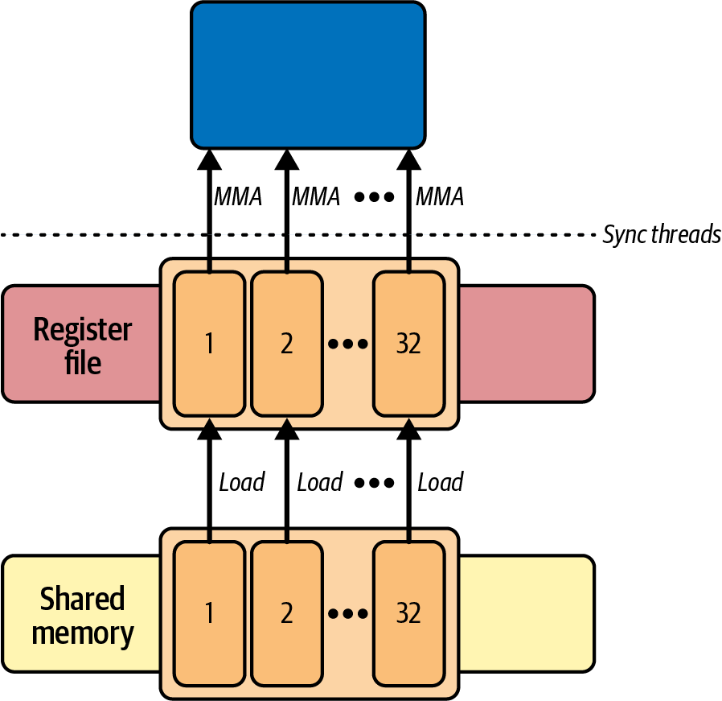
下面的 three-role kernel 示例使用 loader warp（warp_id 0）、compute warp（warp_id 1）和 storer warp（warp_id 2）处理 tile。它展示 role 分支，但不构成高性能、可复现实测的完整 GEMM：
// warp specialized roles using the CUDA Pipeline API#include<cuda/pipeline>#include<cooperative_groups.h>namespacecg=cooperative_groups;// smem_bytes = 3×TILE_SIZE^2×sizeof(float) (three roles, single-pipeline)// 3 tiles * 112 * 112 * 4 byte per float =// 150,528 bytes < 227,328 bytes (~227 KB)// per-block dynamic SMEM limit on Blackwell// Choose TILE_* so total shared memory per block is ≤ the device’s// reported per-block shared memory limit.// Query cudaDevAttrMaxSharedMemoryPerBlockOption and set// cudaFuncAttributeMaxDynamicSharedMemorySize accordingly.#define TILE_SIZE 112// Example tile compute: C = A x B for one TILE_SIZE by TILE_SIZE tile__device__voidcompute_full_tile(constfloat*__restrict__A_tile,constfloat*__restrict__B_tile,float*__restrict__C_tile,intlane_id){for(intidx=lane_id;idx<TILE_SIZE*TILE_SIZE;idx+=warpSize){introw=idx/TILE_SIZE;intcol=idx%TILE_SIZE;floatacc=0.0f;#pragma unrollfor(intk=0;k<TILE_SIZE;++k){acc+=A_tile[row*TILE_SIZE+k]*B_tile[k*TILE_SIZE+col];}C_tile[idx]=acc;}}extern"C"__global__voidwarp_specialized_pipeline_kernel(constfloat*__restrict__A_global,constfloat*__restrict__B_global,float*__restrict__C_global,intnumTiles){thread_blockcta=this_thread_block();// three square tiles in dynamic shared memory: A, B, and Cextern__shared__floatshared_mem[];float*A_tile=shared_mem;float*B_tile=A_tile+TILE_SIZE*TILE_SIZE;float*C_tile=B_tile+TILE_SIZE*TILE_SIZE;// three stage pipeline shared by the block__shared__cuda::pipeline_shared_state<cuda::thread_scope_block,3>pipe_state;autopipe=cuda::make_pipeline(cta,&pipe_state);intwarp_id=threadIdx.x>>5;intlane_id=threadIdx.x&31;intwarps_per_block=blockDim.x>>5;// grid wide warp indexing for persistent tilinginttotalWarps=gridDim.x*warps_per_block;intglobal_warp=warp_id+blockIdx.x*warps_per_block;for(inttile=global_warp;tile<numTiles;tile+=totalWarps){size_toffset=static_cast<size_t>(tile)*TILE_SIZE*TILE_SIZE;if(warp_id==0){// loader produces A_tile and B_tilepipe.producer_acquire();autobytes=TILE_SIZE*TILE_SIZE*sizeof(float);cuda::memcpy_async(cta,A_tile,A_global+offset,cuda::aligned_size_t<32>{bytes},pipe);cuda::memcpy_async(cta,B_tile,B_global+offset,cuda::aligned_size_t<32>{bytes},pipe);pipe.producer_commit();}extern"C"__global__voidwarp_specialized_pipeline_kernel(constfloat*__restrict__A_global,constfloat*__restrict__B_global,float*__restrict__C_global,intnumTiles){thread_blockcta=this_thread_block();// three square tiles in dynamic shared memory: A, B, and Cextern__shared__floatshared_mem[];float*A_tile=shared_mem;float*B_tile=A_tile+TILE_SIZE*TILE_SIZE;float*C_tile=B_tile+TILE_SIZE*TILE_SIZE;intwarp_id=threadIdx.x>>5;intlane_id=threadIdx.x&31;constintbytes=TILE_SIZE*TILE_SIZE*sizeof(float);// three stage pipeline shared by the block__shared__cuda::pipeline_shared_state<cuda::thread_scope_block,3>pipe_state;autopipe=cuda::make_pipeline(cta,&pipe_state);// Block-strided tile ownership: one tile per block iteration.for(inttile=blockIdx.x;tile<numTiles;tile+=gridDim.x){size_toffset=static_cast<size_t>(tile)*TILE_SIZE*TILE_SIZE;// Block-scoped pipeline collectives execute// before role-specific branches.pipe.producer_acquire();cuda::memcpy_async(cta,A_tile,A_global+offset,cuda::aligned_size_t<16>{bytes},pipe);cuda::memcpy_async(cta,B_tile,B_global+offset,cuda::aligned_size_t<16>{bytes},pipe);pipe.producer_commit();pipe.consumer_wait();cta.sync();if(warp_id==1){compute_full_tile(A_tile,B_tile,C_tile,lane_id);}cta.sync();if(warp_id==2){for(intidx=lane_id;idx<TILE_SIZE*TILE_SIZE;idx+=warpSize){C_global[offset+idx]=C_tile[idx];}}cta.sync();pipe.consumer_release();cta.sync();}}
各 warp 在 role-specific branch 中分别执行 compute 或 store，而 unified block-scoped pipeline collective 在 branch 外统一执行。每轮调用 producer_acquire()，在 pipeline collective 下执行 cooperative staged copy（该 path 选用时例如 cuda::memcpy_async），再调用 producer_commit()。在 consumer_wait() 后，cta.sync() 强制 load -> compute -> store 的 phase order；另一次 cta.sync() 与 consumer_release() 用于 recycle stage。由于这些 CTA-wide barrier 把 role phase 分隔开，清单本身并未让三个 role 持续并发 overlap。
这个 unified 示例的重要 correctness rule 是：producer_acquire()、producer_commit()、consumer_wait() 和 consumer_release() 必须由 participating CTA threads 按一致 collective sequence 执行。不要把这些 collective 放进 divergent warp-role branch，除非有意切换到明确指定 producer/consumer role 的 partitioned pipeline API。若 warp 0 load、warp 1 compute、warp 2 store，应把 unified pipeline collective 放在 branch 外，并在 role phase 之间使用 cta.sync()；但这也意味着当前示例以 CTA-wide phase barrier 换取简单 correctness，而不是 fine-grained overlap。
原文称该 kernel 作为 persistent kernel 跨多个 tile 运行以摊销 launch overhead；是否属于严格意义上的 persistent kernel，还取决于 launch grid、resident work loop 和 global work assignment。稍后将进一步讨论 persistent kernel。
总之，CUDA Pipeline API 与 cooperative groups 可表达 producer-consumer handoff，但 synchronization 粒度取决于所选 pipeline form；“SM-wide”也不准确，本例 scope 是 CTA。表 10-3对比了三种实现：naive tiled kernel、使用 double_buffered_pipeline 的 two-stage double-buffered GEMM，以及 warp-specialized pipeline kernel warp_specialized_pipeline。数值均应视为示意，不能归因于上方清单。
| 指标 | 朴素分块 | 两阶段双缓冲流水线（double_buffered_pipeline） |
warp 专用流水线（warp_specialized_pipeline） |
|---|---|---|---|
| 内核执行时间 | 41.3 ms | 20.5 ms（相对于 naive 快 2.01×） | 18.4 ms（相对于 two-stage speedup 10.2%） |
| warp 执行效率 | 68% | 92%（相对于 naive 增加 24 percentage point） | 96%（相对于 two-stage 增加 4 percentage point） |
| 共享内存停顿延迟 / warp 同步停顿 | 高 | 低 | 极低 |
| L2 吞吐量 | 80 GB/s | 155 GB/s（相对于 naive 增加 94%） | 165 GB/s（相对于 two-stage 增加 6.45%） |
| 吞吐量可扩展性 | 仅扩展到每 SM 2–3 个 warp | 可良好扩展到每 SM 约 6 个 warp | 接近随 SM warp 数线性扩展（例如 64 个 warp） |
| DRAM read byte 与 SM cycle 的 overlap | 较差 | 良好 | 优秀 |
| 指令数量 | 1.7 B | 1.05 B（相对于 naive 减少 38%） | 约 1.00 B（相对于 two-stage 减少 5%） |
表中的示意场景把 double-buffered GEMM 写为 20.5 ms，把 warp-specialized version 写为 18.4 ms。清单在 branch divergence 之前统一发出 pipeline collective，以满足 collective ordering，并在 loader、compute 与 storer work 之间使用 explicit handoff point。前一个 two-stage double-buffered kernel 中所有 thread 都参与 consumer phase，因此 consumer_wait() 是 CTA collective；但“stall 整个 block”的实际时间仍由 stage readiness 与 warp scheduling 决定。
原文随后称 finer-grained per-warp synchronization 消除了 full-block wait，并让 loader、compute、storer 三个 warp 持续 overlap；这与清单中的 unified collective 和多次 cta.sync() 相矛盾。清单展示的是 CTA-wide phased handoff，不能证明 SM utilization 从 92% 升至 96%，也不能证明 warp-stall cycle 降至接近零。
表中称 Nsight Compute 显示 naive tiling kernel 在每 SM 2–3 个 active warp 后饱和，并把原因归为 tile load 必须先于 computation 完成。没有 device、shape、launch、metric 或 report，无法验证该 saturation point；load/compute dependency 也不能单独推出 active-warp scaling。
Two-stage double-buffered kernel 可能通过 overlap load 与 compute 改善 throughput，但“扩展到每 SM 6 个 warp 后才受 shared-memory/register limit 约束”同样是配置相关结果，不是该 pattern 的固有界限。
原文称 warp_specialized_pipeline 只要增加 load/compute/store warp 就近似线性扩展，这忽略了 fixed role ratio、CTA granularity、scheduler/pipe throughput、barrier、register 与 shared-memory pressure。Blackwell 的 maximum resident warp 数也应按具体 compute capability/device attribute 查询，不能把 64 warps/SM 当作所有 Blackwell GPU 的统一上限；实际 residency 还受 block size 与资源限制。
表 10-3的示意数值假设 double-buffered 与 warp-specialized approach 都优于 naive tiled kernel：double_buffer_pipeline 把 runtime 减半，warp_specialized_pipeline 再增加 10.2% speedup。但当前 unified pipeline 仍有 block-wide collective 和 CTA synchronization point，不能把假设增益归因于“避免 block-wide producer/consumer participation”。
表中 instruction count 从 naive version 的 1.7 billion 降至 two-stage pipeline 的 1.05 billion（减少约 38%），再降至 warp-specialized kernel 的约 1.00 billion（相对减少约 4.76%）。这些数字没有说明 instruction metric、compiler 或 workload，不能视为实测证据。
表中 L2 load throughput 从 naive tiling 的 80 GB/s 增至 two-stage approach 的 155 GB/s（+94%），再到 warp-specialized kernel 的 165 GB/s（相对 +6.45%）。更高 throughput 不自动代表更少 byte 或更好 performance。清单由 loader warp 把 tile 写入 shared memory，consumer warp 再读取，并没有使用 TMA multicast；“把 single copy multicast 给所有 compute lane并消除全部剩余 redundant L2 read”的说法不准确。是否存在 redundant transaction 应以 requested/actual byte 与 cache metric 验证。
实践中，uniformly tiled GEMM 可先评估 simpler two-stage double-buffered pipeline；warp-specialized approach 则适合具有可分离 role、足够工作量与 deeper pipeline 的场景，例如某些 fused-attention kernel。两者都不保证隐藏大部分 DRAM latency，也不能保证 specialized warp 永不迫使其他 warp 等待。应根据 architecture、shape、resource、correctness 与 measured runtime 选择。
PyTorch public API 不直接暴露 cuda::pipeline。调用 torch.compile 后，TorchDynamo/TorchInductor 可根据 graph 与 target 生成或选择 kernel；某些 GPU path 使用 Triton，也可能调用 cuBLAS、cuDNN、ATen/external kernel 或其他 backend。生成代码可能包含 asynchronous copy、barrier 或 warp-specialized schedule，但不能统一视为实现了与 <cuda/pipeline> primitive 等价的 producer/consumer。
因此，即使 generated source 中看不到显式 cuda::pipeline call，也可能在最终 PTX/SASS 或 backend kernel 中观察到相关 instruction 与 barrier；是否出现必须实际检查 generated artifact。这些优化可能改善 data-transfer/computation overlap，但 occupancy 不一定上升，也不保证获得与 hand-written <cuda/pipeline> implementation 相同的 latency 或 throughput。
PyTorch 可为 fused attention选择多个 backend；其中某些 kernel 使用 warp specialization，另一些则使用不同 pipeline。先看下面由 matmul、softmax 和另一项 matmul 写成的 PyTorch 表达式。原文称它必然对应三个独立 GPU kernel，但 eager/compiled execution 的实际 kernel count 取决于 dispatch、fusion 与 graph：
scores=torch.matmul(queries,keys.transpose(-2,-1))probabilities=F.softmax(scores,dim=-1)context=torch.matmul(probabilities,values)
可以改用 PyTorch 的 scaled-dot-product-attention API：
context=torch.nn.functional.scaled_dot_product_attention(queries,keys,values)
该 API 是 backend dispatcher，而不是固定的三类 warp implementation。根据 device、dtype、shape、mask、dropout、causal setting 和 PyTorch/CUDA version，它可能选择 FlashAttention、memory-efficient attention、cuDNN attention 或 math fallback。Fused backend 可避免显式 materialize 某些 intermediate，从而减少 matmul 与 softmax stage 之间的 global-memory round trip；fallback 或不支持的配置则不一定如此。
torch.compile 值得用于可捕获、具有可优化 graph 的 workload，但并非所有 performance-sensitive 或 irregular workload 都“ideal”；graph break、dynamic shape、compile time、unsupported operation 和 backend choice 都会影响收益。Blackwell 等 modern GPU 提供较多资源与高 bandwidth，warp specialization 可能减少 idle cycle，但不会保证 across-warp near-linear scaling；瓶颈还可能来自 dependency、barrier、register/shared memory、instruction throughput 与 latency。
FlashAttention-3 报告中的约 75% peak FP16 FLOP/s 对应特定 Hopper、precision、shape 与 FLOP-count convention，并不是 fused attention 的通用 ceiling。更合理的结论是：优化目标应为 workload latency/throughput 与 efficiency，而不是强求 100% compute utilization；但是否达到“显著里程碑”仍需相对于明确 baseline 评价。
把 load、compute 与 store 组织成不同 stage，可能提高 transformer attention、fused-operator pipeline 和 custom task scheduler 等 long-running kernel 的 overlap 与 resource utilization；但 pipeline 并不自动 maximize throughput，也不是所有场景的首选方案。Fine-grained inter-warp communication 与 deep pipeline 只有在 role rate 匹配、synchronization 正确且 overhead 可摊销时才有益，linear warp scaling 不是保证。
Persistent kernel（也称 persistent thread）改变了常见的一次 launch 处理一批固定 work 的方式。与连续 launch 许多 small kernel 相比，可以启动一个 long-running kernel，由其 thread 持续从 work queue 领取任务。跨 thread block 共享的 queue 通常位于 global memory；shared-memory queue 只能由相应 CTA 或 cluster 在其可见范围内使用，不能笼统称为全 grid shared queue。
Persistent thread 可在 kernel 内循环处理不断到达的 data chunk，而不在每批 work 后退出，从而摊销部分 repeated launch overhead；它不会消除首次 launch、queue management 或 synchronization cost。Host signal 与 CPU-visible memory 还需要合法的 mapped/coherent memory、atomic scope/order 和 progress protocol。Persistent kernel 可以让 CTA 中的 Warp 0 协调 global-to-shared copy，同时 Warp 1 处理上一批 data，形成 GPU software pipeline；普通 device code 不能未经支持的 memory path 就把任意 CPU host memory 直接复制到 shared memory。
例如，假设有 1,000 个很小且彼此 independent 的 task。一种朴素实现可能为每个 task 单独 launch kernel；若每次 grid 都很小，kernel 可能只在少量 SM 上短暂运行。
这些 sequential tiny launch 可能产生显著 launch gap，并因 grid parallelism 不足而让部分 SM idle。不过 GPU 并不是每次 kernel 都物理“ramp up/ramp down”；多个 stream、CUDA Graph、batching 或合并 grid 也可能减少 launch overhead，不只有 persistent kernel 一种方案。
Persistent-kernel 方案可以启动一个 worker grid，在整个 workload 期间循环领取 work。以 132 个 SM 的 GPU 为例，可以尝试 launch 132 个 block、每 block 256 个 thread，共 33,792 个 thread。但“block 数等于 SM 数”不保证每个 SM 恰好固定驻留一个 block；实际 placement、concurrent residency 与 forward progress 由 scheduler 和 resource usage 决定。下面是简化伪代码：
__device__intg_index;// global counter for next task; initialize to 0 on host__global__voidpersistentKernel(Task*tasks,inttotalTasks){// Every thread loops, atomically grabbing next task index until none remainwhile(true){intidx=atomicAdd(&g_index,1);if(idx>=totalTasks)break;processTask(tasks[idx]);}}
Launch 前，host 需要把 device memory 中的 g_index = 0。不过上方把它声明为 device symbol，下面直接对 host 侧的 &g_index 调用 cudaMemset 的写法通常不成立；应使用 cudaMemsetToSymbol，或把显式分配的 device pointer 作为 kernel argument 传入。清单按原书保留：
cudaMemset(&g_index,0,sizeof(int));// one block per SM on a 132 SM GPUintblocks=132;intthreadsPerBlock=256;persistentKernel<<<blocks,threadsPerBlock>>>(d_tasks,totalTasks);cudaDeviceSynchronize();
使用 persistentKernel 后，不必为每个 task 单独支付 launch overhead，但仍需一次 launch 以及 queue/atomic/synchronization cost。原文假设每次 launch 约 0.02 ms、每个 task 运行 0.1 ms，并把 1,000 个 task 的 work 相加为约 100 ms；这只是串行 work-time sum，不能直接作为 GPU wall-clock time，因为 independent task 可能并行运行。
在同一示意假设下，1,000 次 launch × 0.02 ms 等于 20 ms 的 host/launch overhead sum。但 launch 可被 asynchronous submission、driver batching、CUDA Graph 与 GPU execution overlap，最终 wall-clock 增量不一定正好为 20 ms。把 small task 合入 persistent loop 可能显著减少 launch overhead，具体收益必须与 batching、CUDA Graph 和普通 batched kernel 比较。
Persistent kernel 可以在 work supply 充足且 load balance 良好时提高 utilization，但“数万 thread 处理约 1,000 个 task”本身不能证明 nearly all SM 同时忙碌：大量 thread 可能只执行一次 contended atomic，然后立即发现 queue 为空。Sequential tiny kernel 也不必固定只使用约 35% GPU capacity；原文没有给出该数字的 device、task shape、metric 或测量依据。
原文进一步假设每个 SM 恰好运行一个含 256 thread 的 block，并以每 SM 最多 2,048 thread 计算 occupancy 为 12.5%（原文写 12%）。Maximum threads/SM 依 compute capability，occupancy 也受 warp、block、register、shared memory 和 architecture limit 共同约束；即使 launch block 数等于 SM 数，也不能据此保证 nearly 100% SM active。
这种 persistent-kernel design 可能维持较高 measured SM Active percentage，但还取决于 work availability、atomic contention、load balance、register/shared-memory usage 与 memory/compute bottleneck。应使用 Nsight Systems 检查 launch/timeline 和端到端 gap，再用 Nsight Compute 分析 kernel metric；SM Active 高也不等于 useful throughput 高。
Modern GPU 的 shared-memory capacity、register file 与 asynchronous data-movement feature 可支持更深的 persistent pipeline，但更大的 per-CTA state 也可能降低 residency。支持 TMA 的 architecture/kernel 可由某些 thread 发起 global-to-shared tensor transfer，同时其他 warp compute；TMA 可减少用于地址生成和逐元素 copy 的 instruction overhead，但仍占用 memory path、barrier 与 issue/control resource，不能称为完全不增加 SM pipeline 负担。
当 workload 包含大量 small task 或 size 不均的 task，若逐项处理会产生较高 launch overhead，persistent kernel 可以作为候选方案。Device-side queue 支持 dynamic load balancing，使较早完成的 worker 能继续领取 work；但 queue starvation、tail imbalance、atomic contention、memory latency 或过少的 ready task 仍会使部分 SM idle，不能保证“没有 SM 提前空闲”。
这种 pattern 可用于 graph traversal、custom batched transformation，以及部分 LLM inference per-token operation 等 irregular workload，因为各 task 的执行时间可能差异较大。不过 graph frontier、batch size、token scheduling 和 operator granularity 会决定 persistent queue 是否优于 batched kernel、CUDA Graph 或 framework scheduler。
Persistent kernel 也有代价。开发者通常需要显式管理 task queue、termination、memory ordering 和 synchronization；若许多 thread 同时更新同一 counter，atomic contention 会很严重。常见缓解方式包括按 warp/CTA 成批领取 work、hierarchical queue、work stealing 或减少 polling frequency，但这些设计又增加 correctness complexity。
调试一个 large persistent loop 往往比调试多个 small kernel 更复杂。Divergence 本身通常只导致 path serialization，不会自动使整个 kernel hang；真正的 hang/deadlock 更常来自部分 thread 未到达 collective barrier、非法 grid-wide synchronization、queue termination protocol、memory-order bug 或 circular resource dependency。Long-running kernel 还可能占用大量 GPU resource，影响 concurrent workload、latency/QoS 和 watchdog；需要通过 grid sizing、stream priority、MIG/resource partition 或 scheduler design 控制。
总之，persistent kernel 把 GPU 组织成持续领取 task 的 dynamic worker pool，相对于高开销的 naive baseline 可能显著提高 throughput；原文给出的 2–3× 没有统一 benchmark 条件，不能作为预期值。它可以摊销 repeated launch overhead，但不会消除首次 launch 与 queue overhead，也不保证 maximize occupancy。结合 cooperative groups 或 thread block cluster（稍后介绍）时，某些 intermediate 可以在支持的 scope 和 lifetime 内保留 on-chip，但 multistage pipeline 仍可能需要 global-memory spill、communication 或 synchronization。
一些 framework 与 library 使用 persistent kernel 或 megakernel 改善 inference 等 latency-sensitive workload。关键是减少不必要的 repeated launch、选择合适的 device-side scheduling granularity，并让 worker 有足够 useful work；追求 SM fully occupied 不是目标本身，过度 occupancy、polling 或 queue traffic 反而可能降低性能。
PyTorch/TorchInductor 不会普遍把任意完整 multistage workload 自动 fusion 成一个 kernel，但某些 operator/backend 已使用 persistent 或 fused implementation。获得更广泛的 persistent/megakernel benefit 往往需要 custom CUDA、Triton 或 specialized compiler/runtime。对 multiphase algorithm 进行这种重构可能带来收益，也可能因 register/SMEM pressure、code size、barrier、load imbalance、numerical behavior 或 reduced concurrency 而退化；必须处理 synchronization/deadlock，并与 library kernel、CUDA Graph 和较小 fusion 方案比较。
源自 large-scale inference 的一种 modern persistent-kernel approach称为 megakernel。它把较长的 operation sequence，甚至多个 layer 的 scheduling 与 execution，合入一个 large/persistent kernel。原文进一步称其“跨 GPU fusion 成单一 kernel”，这不应按字面理解：普通 CUDA kernel 在单个 device context 上执行；multi-GPU megakernel system 通常是在每个 GPU 上运行 cooperating persistent kernel，并通过通信与 distributed scheduling 协同。如图 10-8所示，所引 benchmark 在 Llama-1B、batch size 1 和若干特定 GPU 上报告 megakernel 相对 vLLM/SGLang 的 decode throughput 提升。原文把图中的约 1.2×–6.7× throughput ratio 写成“latency 降低 1.2×–6.7×”，指标不一致；该范围也不能归因于仅仅消除 repeated launch，收益还可能来自 scheduling、fusion、memory traffic 与 baseline 差异。
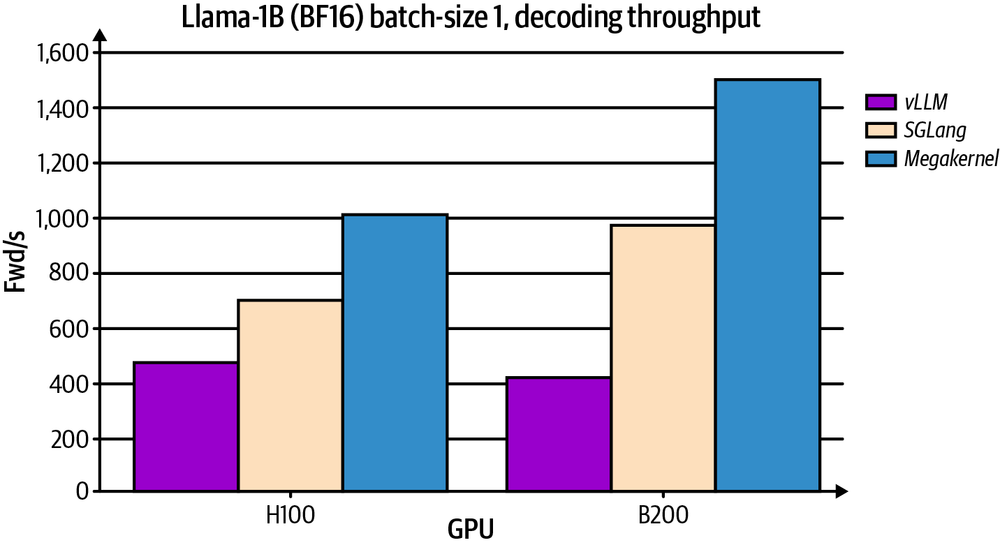
Warp specialization 常与 persistent kernel 组合，因为 long-running worker 会执行许多 iteration，使 deeper pipeline 的启动/排空和 role-coordination overhead 更容易摊销，并可能改善 overlap 与 long-lived state reuse。但二者互不依赖：warp-specialized kernel 不必 persistent，persistent kernel 也不必采用 warp specialization。对于 short-running kernel，额外 code、barrier 与 resource complexity 可能得不偿失。
Persistent-kernel scheduling 的一个限制是，它通常希望保留足够 resident worker 来覆盖目标 GPU。若其他 kernel 已占用大量 SM resource，普通 launch 的 block 可能排队，或只能获得较低 concurrent residency；不应笼统说整个 kernel“没有足够 SM 就无法 launch”。Cooperative launch、thread block cluster 或依赖 all-worker concurrency 的自定义 synchronization 则有更严格的 occupancy/residency requirement，若配置超过设备能力可能 launch failure 或 deadlock。因此必须结合 concurrent workload、stream priority、resource footprint 与 launch API 做 scheduling/load-balancing。
Modern GPU 还支持 thread block cluster，也称 cooperative thread array（CTA）cluster，因为 thread block 也称 cooperative thread array。Cluster 可与 persistent kernel 或 warp specialization 组合，但并不是二者的前提。稍后将详细讨论 thread block（CTA）cluster；简言之，它把多个 block 组织成具有 cluster-level co-scheduling、synchronization 与 DSMEM capability 的 group。原文称这些 block 会占据多个“邻近 SM”，这不是通用 placement guarantee：block 可能位于一个或多个 SM，具体 mapping 不由程序固定控制。
Cooperative Groups API 可用于定义和同步具有明确成员关系的 thread group。支持的 group 可对应 thread block、partitioned tile、grid 或 thread block cluster 等 scope，如图 10-9所示；并非任意 thread 集合或任意粒度都能自由组成可同步 group，具体能力取决于 group type、launch mode 和 architecture。
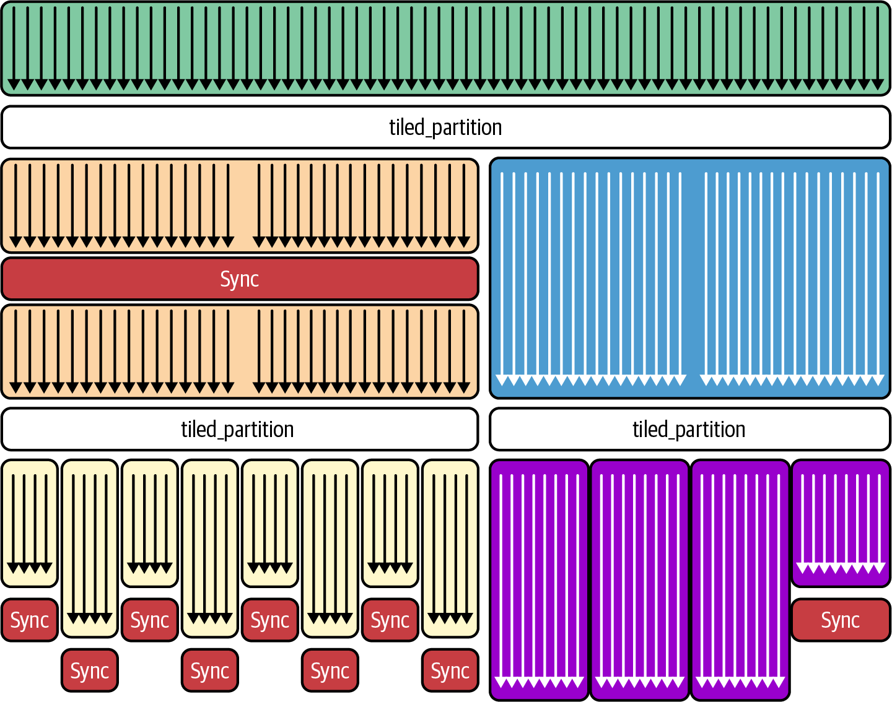
Cooperative groups 为相应 group type 提供 sync、broadcast、reduce 等可复用 collective，减少 ad hoc barrier 的使用。传统 __syncthreads() 只同步同一 thread block；普通 kernel launch 中没有可供任意 grid 直接使用的全 grid barrier。Cooperative grid launch 则可提供受容量与参与规则约束的 grid-level synchronization。
Cooperative groups 支持 kernel 内不同 scope 的 synchronization，可用于协调某些 multistage pipeline；是否适合 warp、block、grid 或 cluster 间协作，取决于数据可见范围、collective contract 与 launch capability。使用时需包含 <cooperative_groups.h>，取得合法 group object，并让规定的成员一致参与相应 collective。
API 包括 cg::this_thread_block()、cg::tiled_partition() 和 cg::this_cluster() 等 call。随后可调用 group.sync() 或其他 supported collective。这里的 cg::this_cluster() 需要支持 thread block cluster 的 architecture 与 cluster launch；不同 group 的 sync 语义和 memory visibility 也不能互换。
要以 cooperative mode launch kernel，可使用 cudaLaunchCooperativeKernel()。设备必须支持 cooperative launch，而且 grid 必须满足同时驻留所需的 capacity constraint，否则 launch 返回错误。可用 cudaOccupancyMaxActiveBlocksPerMultiprocessor 结合实际 block size、dynamic shared memory 和 device property 估算上限，并检查所有 API error。Kernel 内可用下面的 call 实现 all-thread-block barrier：
cooperative_groups::this_grid().sync();// or grid.sync()
在有效 cooperative grid 中，参与 grid group 的所有 thread 到达该点后，任何 thread 才能越过 barrier。这样可以在不结束 launch、也不把控制权交回 host 的情况下，把 kernel 分成 sequential phase；所有成员必须以一致控制流参与。
以 LLM 中常见的 softmax 为例，它通常包含 reduction（实际稳定实现还先求 maximum，再求 exponential sum）以及使用 reduction result 的 per-element normalization。传统 multi-kernel 实现可由第一个 kernel 把 partial/final result 写到 device global memory，后续 kernel 再读取；通常不必把结果复制回 host。额外 kernel boundary 与 global-memory intermediate 会产生开销，但“需要大量 host memory movement”的说法不准确。
使用 cooperative grid 时，可在一个 kernel 中让各 block 计算 partial result，经 barrier 后由指定 block 聚合，再次调用 grid.sync() 后让全部 thread 进入下一 stage。不过跨 block 的 aggregate 必须存放在所有 block 都可见的 memory（通常是 global memory，或在适当 architecture/scope 下采用其他明确机制）。某个 block 的 register 或普通 shared memory 不能被整个 grid 直接读取，因此原文声称全部 thread 从 register/shared memory 读取 aggregate 是错误的。
Cooperative launch 要求整个 grid 满足 concurrent-residency capacity；若请求的 block 多于该 kernel 配置可同时支持的数量，launch 应返回错误。仍需检查 device support、launch return status 和后续 asynchronous error。
Cooperative kernel 的 grid size必须可同时驻留，因此合法 launch 不会因尚未调度的“nonexistent block”而永久等待 grid.sync()。但 runtime 只保证 launch/residency 条件，不保证每个 block/thread 在程序逻辑上一定到达 grid.sync()；divergence、early return、fault 或无限循环仍会 deadlock。必须检查 cudaLaunchCooperativeKernel() 的 return status。
例如，若 GPU 有 132 个 SM，且给定 kernel/block/dynamic-SMEM 配置下每 SM 最多 concurrent resident 4 个 block，则单设备 cooperative grid 上限可估为 528 个 block；超过容量应导致 launch failure。应使用 cudaOccupancyMaxActiveBlocksPerMultiprocessor 对实际配置求值，并检查 cudaLaunchCooperativeKernel return status。该算术不代表所有 528 block 在整个执行期间固定映射或同步前都有相同进度。
在不使用 cluster DSMEM 的跨 block 协作中，可以把 cudaLaunchCooperativeKernel 与 global-memory atomic、flag 或 grid barrier 配合，代价可能包括 global-memory traffic。并非所有 intermediate 都必然搬到 HBM：cache、register/shared-local state 和 algorithm design 会影响实际 traffic。
Thread block cluster 与 DSMEM 从 Hopper（compute capability 9.0）开始提供，Blackwell 继续支持并扩展相关能力，并非 Blackwell 才出现。Cluster 内 block 可访问彼此的 distributed shared memory 并执行 cluster synchronization，从而在 cluster scope 内避免部分 global-memory round trip；它不是全 grid coordination 的等价替代，性能也需实测。后文将详细介绍。
当单次 kernel launch 确实需要 all-thread-block barrier 时，可以评估 cooperative kernel。它能避免某些 repeated launch，但不会让 register 或普通 shared memory 跨 block 可见，也不自动把所有 intermediate 保留在 fast memory。Grid 必须限制在 concurrent capacity 内；简单增大 block 并不总能减少风险，因为更大的 block 可能提高 register/SMEM pressure、降低 blocks/SM 或超过其他 limit。
Cooperative kernel 的主要限制之一是 grid size 受 concurrent-residency capacity 约束，可能降低可用 parallelism 或要求 grid-stride loop。Thread block cluster 解决的是 cluster-scope cooperation，不会消除 cooperative grid 的全局容量约束，也不是简单的替代方案。
Cooperative grid barrier 要求 group 中每个 thread 都调用 grid.sync()。若任何 thread 跳过或永远无法到达 grid.sync() （例如 divergent if 的一条 path 未参与、early return 或 fault），其他参与者可能永久等待并形成 deadlock。因此 barrier 必须位于全体成员一致可达的控制流中。
概括来说，cooperative grid 让单个 device 上的整个 launched grid 参与 grid.sync() global barrier，适合确需 multi-stage global synchronization 的 algorithm；“整个 GPU”不应理解为跨 device。Grid barrier 通常比 block-或 cluster-scoped barrier 协调范围更大、成本更高，但具体 overhead 依 grid、architecture 和 workload。应减少不必要的调用，并保证 barrier 间有足够 useful work，同时与 multi-kernel/CUDA Graph 方案实测比较。
若只需有限 cross-block coordination，global-memory atomic 或 per-block flag 可能比 full-grid barrier 更简单，但 correctness 仍需明确 atomic scope/order 与 progress。它们不一定比 thread block cluster/DSMEM 更慢：cluster 只适用于 cluster scope，并受 architecture、placement、resource 和 data-sharing pattern 约束，应按目标 workload 选择。
如果 workload 在 persistent loop 内偶尔需要 cross-thread-block barrier 来聚合 partial result，可以把 persistent kernel 与 cooperative groups 组合起来，调用 grid.sync()。它提供 grid-level barrier，使 kernel 可在 device 上推进多 stage reduction 或其他 global step，而不必结束当前 launch 再重新 launch。
例如，某 workload 在 1,000 个 iteration 中反复执行两种 computation，且每次都因 cross-block data dependency 需要 global barrier。朴素实现可能每轮 launch 两个 kernel，共 2,000 次 launch；即使在同一 stream 中第二个 kernel 会按 stream order 等待第一个，也仍需承担 launch/dispatch overhead。可以尝试把两阶段合并为 cooperative persistent kernel，如下所示，但前提是整个 grid 能同时 resident 且所有 thread 一致到达每个 barrier：
#include<cuda_runtime.h>#include<cooperative_groups.h>namespacecg=cooperative_groups;__device__inlinefloatsomeComputationA(floatx){returnx*2.0f;}__device__inlinefloatsomeComputationB(floata,floatb){returna+b;}__global__voidcombinedKernel(float*__restrict__dataA,float*__restrict__dataB,intN,intiterations){cg::grid_groupgrid=cg::this_grid();// whole-grid groupconstinttid=blockIdx.x*blockDim.x+threadIdx.x;// thread's linear idconstintstride=gridDim.x*blockDim.x;// total grid threadsfor(intit=0;it<iterations;++it){// Stage 1: update all elements of A using a grid-stride loopfor(inti=tid;i<N;i+=stride){dataA[i]=someComputationA(dataA[i]);}grid.sync();// global barrier; also provides memory visibility// Stage 2: use finished A to update B (again grid-stride)for(inti=tid;i<N;i+=stride){constfloatmid=dataA[i];dataB[i]=someComputationB(mid,dataB[i]);}grid.sync();// barrier before next iteration}}
在主机端，只需按如下所示调用这个结合协作与持久化特性的内核：
// ... allocate/copy dA, dB, set N, iterations, choose blockSizecudaDevicePropprop{};cudaGetDeviceProperties(&prop,0);if(!prop.cooperativeLaunch){// Fallback: run two kernels per iteration instead of grid.sync()// (see alternative below)}// Compute the maximum grid size allowed for a cooperative kernelintmaxBlocksPerSm=0;constintblockSize=256;cudaOccupancyMaxActiveBlocksPerMultiprocessor(&maxBlocksPerSm,combinedKernel,blockSize,0);constintmaxCoopGrid=maxBlocksPerSm*prop.multiProcessorCount;// Choose grid size, but clamp to cooperative limitintgridSize=(N+blockSize-1)/blockSize;if(gridSize>maxCoopGrid)gridSize=maxCoopGrid;// Launch cooperativelyvoid*args[]={&dA,&dB,&N,&iterations};cudaLaunchCooperativeKernel((void*)combinedKernel,gridSize,blockSize,args);cudaDeviceSynchronize();
在理想结构比较中，该 single kernel 取代原本 2 × 1,000 = 2,000 次 kernel launch，并避免每轮重复 dispatch。循环内的 grid.sync() 保证 phase ordering：所有 block 完成 Stage 1 后，才能进入 Stage 2 以及下一 iteration；但它不自动消除 computation、queue、memory traffic 或 synchronization cost。
每个 thread 的 register state 和每个 CTA 的 shared-memory state 可以跨 grid.sync() 保持；跨 block data exchange 仍需使用 global memory，或使用适用的 thread block cluster/DSMEM。GPU 内循环只意味着首次 launch 后不再重复 launch，不代表没有 barrier、polling 或 global-memory traffic。
Cooperative kernel 要求 device 支持 cooperativeLaunch，并使用 cudaLaunchCooperativeKernel launch；grid 中所有 block 必须满足 concurrent residency。应使用 CUDA Occupancy API 按实际 kernel resource size grid，并处理 launch error。若 ((N + threads - 1) ÷ threads) 超过 cooperative capacity，不能简单截断后假设所有数据都被处理；需要 grid-stride loop、分批 launch 或 fallback kernel。
使用 CUDA Occupancy API 为 cooperative grid sizing；同时检查 launch return status、dynamic shared memory 和实际 device property。
不能用“modern GPU 通常可同时运行几千个 block”作为 capacity 假设。Concurrent block 数由 SM 数、block size、register、shared memory、warp limit、cooperative launch mode 与 kernel attributes 共同决定，可能远低于或不同于该数量级。必须在目标 device 上查询并验证 block size 与 resource consumption。
该示例在 iteration 之间不把控制权交回 host，因此外层 loop 具有 persistent-kernel 的形态；内层 stage 通过 grid-wide synchronization point 排序。它是否能长期安全运行，仍取决于 cooperative residency、progress、barrier convergence 和 work duration。
这种 combined pattern 可用于 LLM inference 中包含 reduction/normalization（Stage 1）和 per-element transformation（Stage 2）的 multistep algorithm，但不一定适合每一 layer。Cooperative persistent kernel 可以减少 inter-kernel launch boundary；它不会消除跨 block global-memory exchange，也不保证 maximize on-chip locality。应比较 fused kernel、CUDA Graph、分阶段 kernel 和 framework backend 的端到端结果。
一种常见做法是在资源允许时尝试让 persistent kernel 使用接近 one-block-per-SM 的 worker grid。这样可以在每个 SM 上提供 resident worker，并从 work queue 迭代领取 task；但 block-to-SM mapping、occupancy 和可用 residency 必须由目标 device/resource 配置验证，不能把它称为最大化 occupancy 或保证 SM 不 idle。若各 phase 需要 global synchronization，worker 可使用 grid.sync()；决定是否组合 cooperative 与 persistent strategy 时，可询问以下问题：
如果是，可以评估 cooperative kernel（或 cooperative persistent kernel），在 phase 之间调用 grid.sync()；前提是 grid capacity 与一致参与条件满足。
如果是，可以评估 persistent kernel，让 worker 在 device-side queue 上循环而不为每个 task 返回 host；还需比较 batching、CUDA Graph 与普通 fused kernel。
如果是，cooperative persistent kernel 可能值得 benchmark；“best performance”仍需与其他实现实测，且 cluster 不等于整个 GPU 资源隔离。
如果是，不要仅依赖 thread block cluster 实现资源隔离。应评估较小 grid、stream/MPS/MIG 或其他 partition/scheduling 机制；cluster 主要定义协作与数据可见 scope。
概括来说，单一 kernel 同时执行 persistent task loop，并在 phase 之间调用 grid.sync()，可以减少 separate kernel launch boundary 和一部分 intermediate transfer。但 barrier、global-memory exchange、queue traffic 与 launch capacity 仍存在。
这不意味着 data 会在整个 computation 中始终留在 shared memory 或 register；跨 CTA data 通常仍需 global memory，资源压力也可能迫使 spill。GPU 是否持续做 useful work、是否接近 peak hardware limit，必须由端到端 benchmark 与 profiler 证明。
一个重要 caveat 是：cooperative kernel 的 concurrent-residency 要求可能限制其他 kernel 在同一设备上的共置。若还需调度 asynchronous prefetch 或低优先级 inference kernel，应评估 grid sizing、stream priority、MPS/MIG 或其他资源 partition。Thread block cluster（下一节）提供的是 cluster-scope cooperation，不是通用 GPU partition。
从性能角度看，DSMEM 可以减少重复的 global-memory 流量，并可能提高有效带宽。例如在 tiled GEMM 中，如果 cluster 内多个 thread block 共享 A 或 B 矩阵的片段，一个 block 可以从 global memory 载入 tile，再通过 TMA 将其 multicast 给 cluster 中的其他 block。
当 thread block 属于同一 cluster 时，TMA engine 支持将数据直接送入 DSMEM 的 multicast copy mode。一次 TMA transfer 可以同时把数据放入每个参与 block 的 shared memory，从而避免重复的 DRAM fetch。
使用 TMA multicast 时，支持该路径的 GPU 可以在一次操作中将数据分发到 cluster 成员（thread block）的 shared memory，减少同一 tile 的重复 global-memory load。这可能改善 bandwidth utilization、减少 DRAM 流量，尤其适用于许多 block 需要相同输入的场景，如图 10-17所示。
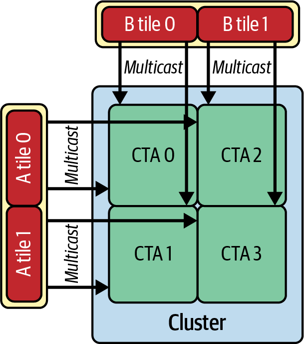
这里 TMA engine 执行从 global memory 到 DSMEM 的一次 multicast，将 tile 分发到 cluster 中每个 thread block 的 SMEM，从而减少重复 DRAM read。TMA multicast 通过 tensor-map descriptor 配置，并以目标为 shared::cluster 的 cp.async.bulk.tensor 发出。CUTLASS/cuTe、Triton 等高层库可以代为生成这些 multicast operation、descriptor 和 bulk tensor copy；相关 PTX 指令（包括带 tensor-map operand 的 cp.async.bulk.tensor）见PTX 文档。是否可用仍取决于目标架构、CUDA 版本和库实现。
另一个常见用途是 multiblock reduction 或 scan。各 block 不必先把 partial sum 或 scan result 写入 global memory、再启动单独 kernel 合并；thread block cluster 中的 block 可以将 partial result 写入 DSMEM。
在同一 cluster 内，可以利用 shared memory 和 cluster-level barrier cluster.sync() 对这些 partial result 执行片上 reduction 或 prefix-sum。通常只需将最终结果写入 global memory，这可能减少 global-memory read/write。
组合 thread block cluster、DSMEM 与 TMA multicast，可以构建将大部分数据交换留在片上的多阶段、细粒度 pipeline。无论是为 GEMM 共享 tile、为 reduction 累加 partial sum，还是执行 multiblock scan，这些机制都可能减少 HBM 往返并提高有效 arithmetic intensity；收益需由具体 workload 验证。
block-scope 的 cuda::pipeline 不会同步其他 block；cluster-wide distribution 需要使用 TMA multicast，或配合 cluster.sync 的 DSMEM。
考虑 CTA 0 和 CTA 1 两个都需要矩阵 A 同一 tile 的 thread block。没有 DSMEM 时，每个 CTA 都会发起自己的 global-memory load，导致相同数据被取两次并浪费 DRAM 带宽。
使用 DSMEM 时，CTA 0 可将 tile 载入自己的 shared memory 一次，再通过片上 DSMEM network multicast，使 CTA 1 直接从 shared memory 读取。如果 cluster 包含超过两个 CTA，同一 tile 可以在所有 block 之间共享；不过所需的 global HBM load 数量仍取决于具体 TMA/访问协议。表 10-4比较了两个 thread block 组成的 cluster 与两个独立 thread block。
| 指标 | 两个独立 CTA（无 DSMEM） | 带 DSMEM 的 CTA pair（2-block cluster） |
|---|---|---|
| 全局内存加载事务 | 2×（每个线程块加载一次 tile） | 1×（tile 仅加载一次） |
| L2 cache 命中率 | 50% | 85% |
| CTA 间数据复用 | 不适用（无复用） | 显著（CTA 1 复用该 tile） |
| 每个 CTA 的有效 DRAM 带宽 | 300 GB/s | 减少 50% 150 GB/s |
| Kernel 时间（相对值） | 1.0× | 0.6×（加速 40%） |
表中给出的 40% kernel speedup、300→150 GB/s 和 50%→85% 命中率应视为该示例 workload 的示意 benchmark，而非 DSMEM 的通用保证。实际结果会受到 tile shape、cache 状态、cluster residency、TMA 配置和竞争影响。
简而言之，multicast 共享数据可以让多个 block 以片上路径复用数据；对于 memory-bound workload，这可能带来明显加速，但应通过端到端测量确认。
需要注意，DSMEM 与 L2 是不同的数据路径；这为 block 间共享提供了两条可能的路径。DSMEM 面向 cluster-local address 的访问使用专用的 SM-to-SM 互连，而 L2 仍服务于 global-memory/cache 层级。具体是否绕过某一级 cache、以及两条路径如何协同，取决于架构和指令语义，如图 10-18所示。
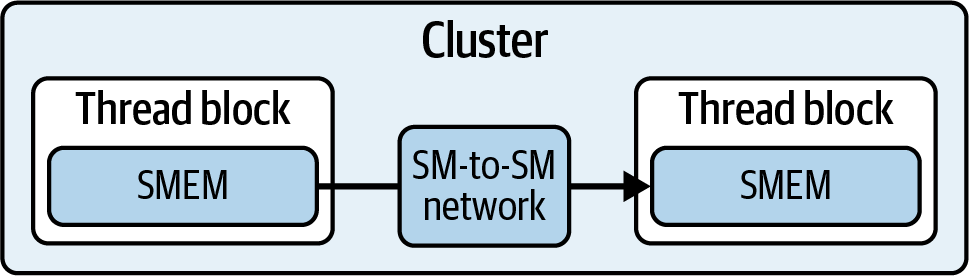
远程 DSMEM access 通过 thread block cluster interconnect 路由，与 global-memory traffic 不同。thread block 使用 DSMEM 获取 tile 时，会走 cluster 规定的 shared-memory 传输路径；其延迟和吞吐通常不同于 local shared memory，不能笼统保证二者完全相同。
如果 tile 不在可访问的 DSMEM 区域中，就必须通过正常的 global-memory/cache 层级获取，可能命中 L2。例如 tile 已不再驻留于相关 shared-memory allocation 时，thread block 仍可能从 L2 取得数据，而不必每次都回到 DRAM；具体行为取决于 cache 状态。
因此，合理设计的 DSMEM/TMA 路径可能减少 memory stall 和重复流量，但 occupancy 是否保持较高、整体是否显著快于两个独立且未优化的 block，必须由 profiler 与端到端 benchmark 证明。
Thread block cluster 为过去需要 global-memory communication 或多次 kernel launch 的 workload 提供了新的并行化策略。例如，大型矩阵乘法的 output tile 可能因 shared-memory 限制而无法由单个 thread block 处理。
过去可以把工作拆到两个 thread block，但每个 block 都要通过 global memory 交换 partial result，可能带来额外流量和延迟；另一种做法是再启动 reduction kernel 合并两个 block 的输出。
借助 thread block cluster 和 DSMEM，这两个 block 可以组成 cluster，直接共享片上 shared-memory allocation，并使用硬件支持的 primitive 合并结果。在支持的架构上，DSMEM 允许一个 SM 通过 cluster interconnect 对另一个 SM 的 shared memory 执行 load/store/atomic。
要有效使用 thread block cluster，必须仔细设计算法。同步开销可能较低，但并非为零；过于细粒度的数据共享未必值得。
Thread block cluster barrier 类似第 7 章介绍的 warp-level intrinsic（例如 __shfl_sync()）：所有参与者都必须到达同一个同步点。调用 cluster.sync() 时，cluster 中所有 thread block 都必须到达该行，之后 block 才能继续。
如果某个 block 提前完成，它会等待；如果某个 block 因线程走了不同分支等原因永远不到达 barrier，整个 cluster 可能 deadlock。
换言之，warp intrinsic 要求 warp 内线程遵循一致的 instruction path 以避免 divergence；thread block cluster 也要求所有 block 在每次 cluster.sync() 前遵循一致的控制流。
由于这种 lockstep 要求，block 间细粒度数据共享必须与同步开销和 deadlock 风险权衡。正确使用时同步可能很便宜；但只要一个 block 绕过或延迟到达 cluster.sync()，性能就可能受影响，甚至使 kernel 挂起。
应组织代码，使每个 block 一致到达每个 barrier，就像使用 warp-level intrinsic 时 warp 内所有线程都必须到达 barrier 一样。这是利用 thread block cluster 低延迟片上通信、避免 deadlock 的必要条件。
通常，当每个 block 在同步或数据交换点之前都有足够多、可独立执行的工作时，thread block cluster 更可能取得较好结果。同步并完成片上数据传输后，各 block 可以继续处理。
Thread block cluster 对 block-sparse matrix operation 可能特别有用，这类操作常见于 sparse attention、LLM model pruning 和 compression。此时各 block 处理不同的非零区域，并共享边界数据。
Thread block cluster 也可用于多阶段 reduction，例如 transformer layer 中的 softmax 和 normalization；这些操作通常需要使用 cluster 内各 block 的 partial result 执行最终合并。
更一般地说，当 large GEMM 超出单个 block 的资源时，可能受益于 thread block cluster。GEMM 是现代 LLM 中 transformer attention、multilayer perceptron（MLP）层和 embedding lookup 的核心计算。
不过，更大的 cluster size 可能降低整体 occupancy。例如，16-block cluster 可能在某段时间占用较多 SM，减少同一设备上其他工作可用的资源。除非特殊场景确实需要更大 cluster，否则可以先从 2 或 4 个 block 的 cluster 开始；最终应使用具体 workload profiling，确认片上资源共享带来的收益超过潜在并行度损失。
使用 cluster launch 时，应使用 Nsight Compute launch statistics 和标准 occupancy API（例如 cudaOccupancyMaxActiveBlocksPerMultiprocessor）验证 active block 与 cluster residency。使用 non-portable cluster size 时，设置 cudaFuncAttributeNonPortableClusterSizeAllowed，或通过 cudaLaunchKernelEx attribute 传入 cudaLaunchAttributeNonPortableClusterSizeAllowed；否则 launch 可能失败，或实测 occupancy 较低。
现在重新讨论 warp specialization，并将其与 CUDA Pipeline API 和 thread block cluster 结合。以 cluster leader 所在 block 的 block-scope pipeline 分阶段执行 copy，再通过 DSMEM 执行 cluster-wide barrier。这样 cluster 中的 block 可以消费同一组 input tile，而不必各自从 global memory 重复加载。
每个 block 内按 warp 分配角色。leader block 的 loader warp 为每个 tile 协作执行一次 copy 到自身 shared memory；cluster-wide barrier 发布这些 tile 后，每个 block 使用 compute warp 通过 DSMEM 读取 leader 的 tile，并计算互不重叠的行区间；各 block 的 storer warp 再把该区间写回 global memory。异步 copy 只由 leader 使用 block-scope pipeline，其他 block 不等待这条 pipeline。代码如下：
// Warp specialization across a thread-block cluster// using DSMEM and a block-scoped pipeline#include<cuda/pipeline>#include<cooperative_groups.h>#include<algorithm>namespacecg=cooperative_groups;#define TILE_SIZE 128#define TILE_ELEMS (TILE_SIZE * TILE_SIZE)// Compute a band of rows of the TILE_SIZE×TILE_SIZE product from DSMEM sources.// Each lane processes rows [row_begin, row_end) in a 32-way striped loop.__device__voidcompute_rows_from_ds(constfloat*__restrict__A_src,constfloat*__restrict__B_src,float*__restrict__C_dst,introw_begin,introw_end,intlane_id){for(introw=row_begin+lane_id;row<row_end;row+=warpSize){for(intcol=0;col<TILE_SIZE;++col){floatacc=0.0f;#pragma unrollfor(intk=0;k<TILE_SIZE;++k){acc+=A_src[row*TILE_SIZE+k]*B_src[k*TILE_SIZE+col];}C_dst[row*TILE_SIZE+col]=acc;}}}extern"C"__global__voidwarp_specialized_cluster_pipeline(constfloat*__restrict__A_global,constfloat*__restrict__B_global,float*__restrict__C_global,intnumTiles){thread_blockcta=this_thread_block();cluster_groupcluster=this_cluster();extern__shared__floatshared_mem[];float*A_tile_local=shared_mem;float*B_tile_local=A_tile_local+TILE_ELEMS;float*C_tile_local=B_tile_local+TILE_ELEMS;// Block-scoped pipeline used only by the cluster leader// to stage asynchronous copies__shared__cuda::pipeline_shared_state<cuda::thread_scope_block,2>pipe_state;autopipe=cuda::make_pipeline(cta,&pipe_state);constintlane_id=threadIdx.x&31;constintwarp_id=threadIdx.x>>5;autowarp=tiled_partition<32>(cta);constintcluster_rank=cluster.block_rank();constdim3cluster_dims=cluster.dim_blocks();constintblocks_in_cluster=cluster_dims.x*cluster_dims.y*cluster_dims.z;// 1D cluster arrangement along x;// each iteration processes one tile per clusterautoloader=cooperative_groups::tiled_partition<32>(cta);for(inttile=blockIdx.x/cluster_dims.x;tile<numTiles;tile+=gridDim.x/cluster_dims.x){constsize_toffset=static_cast<size_t>(tile)*TILE_ELEMS;// Leader block stages A and B once for the entire cluster.// For block-scoped pipeline collectives, entire leader CTA participates.if(cluster_rank==0){pipe.producer_acquire();if(warp_id==0){cuda::memcpy_async(warp,A_tile_local,A_global+offset,TILE_ELEMS*sizeof(float),pipe);cuda::memcpy_async(warp,B_tile_local,B_global+offset,TILE_ELEMS*sizeof(float),pipe);}pipe.producer_commit();// Make loads visible to leader CTA before publishing cluster-wide.cuda::pipeline_consumer_wait_prior<1>(pipe);}// Publish the leader’s tiles to every block via DSMEMcluster.sync();constfloat*A_src=cluster.map_shared_rank(A_tile_local,0);constfloat*B_src=cluster.map_shared_rank(B_tile_local,0);// Divide rows among blocks in the clusterconstintrows_per_block=(TILE_SIZE+blocks_in_cluster-1)/blocks_in_cluster;constintrow_begin=std::min(cluster_rank*rows_per_block,TILE_SIZE);constintrow_end=std::min(row_begin+rows_per_block,TILE_SIZE);// Compute warp produces block’s band of rows into local shared memoryif(warp_id==1){pipe.producer_acquire();compute_rows_from_ds(A_src,B_src,C_tile_local,row_begin,row_end,lane_id);pipe.producer_commit();// publish C_tile_local}// Storer warp writes this block’s rows back to global memoryif(warp_id==2){pipe.consumer_wait();// observe C_tile_localfor(introw=row_begin+lane_id;row<row_end;row+=warpSize){for(intcol=0;col<TILE_SIZE;++col){C_global[offset+row*TILE_SIZE+col]=C_tile_local[row*TILE_SIZE+col];}}pipe.consumer_release();}// All blocks finish this tile before the leader reuses its bufferscluster.sync();}// dynamic shared memory size: 3 * TILE_ELEMS * sizeof(float)}
这里 leader 使用 block-scope pipeline，将每个 tile 的两块 operand 协作 copy 到自己的 shared memory；cluster-wide barrier 确保这些数据按 cluster 语义对成员可见，并可通过 DSMEM 访问。
这种“copy once、通过 DSMEM share”的模式，在 cluster barrier 之后使用 DSMEM 和 map_shared_rank 共享 leader 的 tile。它不同于前面介绍的 tensor-map descriptor、cp.async.bulk.tensor 与 shared::cluster TMA multicast。必须明确这一点：在 DSMEM 模式中，如果没有先调用 cluster.sync()，follower 可能读取到过期的 leader SMEM 数据。因此，应在 map_shared_rank() 之前执行满足协议要求的 cluster.sync()。
下面的经验可帮助选择 TMA multicast 或 DSMEM sharing：如果每个 block 的 tile reuse 很高，或 cluster size（C）较大，TMA multicast 可能更合适，因为可以写入一次、再由各 block 多次 local read。如果 SMEM 紧张，或 C 较小且每个 follower 只访问 tile 一次，DSMEM sharing 可能 footprint 更小。最终选择仍应依据架构、访问模式和 benchmark。
每个 block 使用 map_shared_rank 从 leader 的 shared memory 直接读取，并计算不同的行区间，再将结果写入 global memory。这可以减少 cluster 内重复 global load，同时保留 pipeline 在关键阶段的 overlap 优势。
leader block 的 loader warp 调用 producer_commit()，将本地 stage 提交给该 block。其他 block 不等待 leader 的 pipeline，而是在 cluster-wide barrier 后观察 leader 的 tile，再从 distributed shared memory 读取。
这样，tile loading、compute 和 store 可以跨多个 block 交错执行，可能提高 SM 利用率。表 10-5比较了单 block warp-specialized kernel 与本节介绍的 thread-block-cluster（multiblock）warp-specialized kernel。
| 指标 | 朴素分块 | 两阶段双缓冲（double_buffer_pipeline） |
warp 专用（warp_specialized_pipeline） |
线程块集群流水线（warp_specialized_cluster_pipeline） |
|---|---|---|---|---|
| 内核执行时间 | 41.3 ms | 20.5 ms（比朴素版本快 2.01 倍） | 18.4 ms（比两阶段快 10.2%） | 17.2 ms（比 warp 专用快 6.5%） |
| warp 执行效率 | 68% | 92%（比朴素版本高 24%） | 96%（比两阶段高 4%） | 97%（比 warp 专用高 1%） |
| Warp 状态停顿百分比（共享内存与屏障等待） | 高 | 低 | 极低 | 极低（进一步降低） |
| L2 吞吐量 | 80 GB/s | 155 GB/s（比朴素版本高 94%） | 165 GB/s（比两阶段版本高 6.45%） | 170 GB/s（比 warp 专门化版本高 3%） |
| 吞吐量可扩展性 | 可扩展至每个 SM 2–3 个 warp | 可扩展至每个 SM 约 6 个 warp | 几乎线性扩展至 SM 的 warp 上限（Blackwell 上每个 SM 可驻留 64 个 warp） | 在线程块间充分扩展，直至受 Blackwell 上每个 SM 可驻留 64 个 warp 的上限约束 |
| DRAM 读取吞吐量与内核时长的重叠情况 | 重叠较差 | 重叠良好 | 重叠极佳 | 重叠极佳（即使在线程块交接时） |
| 指令数量 | 17 亿 | 10.5 亿（比朴素版本少 38%） | 约 10.0 亿（比两阶段版本少 4.76%） | 约 9.8 亿（比 warp 专门化版本少 2%） |
该表意在说明：thread block cluster 实现可在一次 cooperative launch 中将 loader、compute 和 storer 角色分布到多个 block，从而可能改善 SM 利用率并减少执行时间和重复内存流量。表中数值是示例 benchmark，不代表通用结果。
在示例中，thread block cluster pipeline kernel（warp_specialized_cluster_pipeline）比单 block warp-specialized kernel 约快 1.2 ms（6.5%）；原因是 cluster 版本在多个 block 间交错执行 tile load、compute 和 store。该提升依赖具体设备与 workload。
示例中 SM utilization 约为 97%，L2 load throughput 约为 170 GB/s；这些数字取决于实现和测量方法。DSMEM 模式下，leader 只加载一次 tile，其他 block 在调用 cluster.sync() 后通过 map_shared_rank() 读取；TMA multicast 则可将一次 global tensor copy 分发到各 block 的 shared memory。
示例中 instruction count 约降至 0.98 B，但真实计数取决于编译器和 kernel。只要有足够 block 与 warp，pipeline 可能扩展到目标 GPU 的 resident-warp 上限；具体上限不能仅凭 Blackwell 名称推断。
单 block 与 thread block cluster 的 warp specialization 最终都受同一类“每 SM resident warp”资源上限约束，但二者在数据供给和同步方式上不同。是否形成性能优势，应通过类似表 10-5的实测确认。
在单 block warp-specialized kernel 中，每个 block 可分配三个 warp：一个将 A、B 的 tile-sized chunk 加载到 shared memory，一个计算该 chunk，一个将结果写回 global memory。三个 warp 完成各自角色后，block 继续处理下一个 tile，循环往复。
即使每个 SM 都有三个分别负责 load、compute、store 的 active warp，也不意味着达到了 SM 的 warp 上限。现代 GPU 的并发 warp 上限因架构而异，实际 residency 还受 register、shared memory 和每 SM block 数限制。
在总 live warp 数相近时，单 block warp-specialized design 与 cooperative grid 可能显示相近 occupancy，但内存行为不同。单 block design 中，每个 block 都获取自己需要的 input tile 副本；多个 block 大致同时复用同一 tile 时，设备可能执行重复 read，消耗 L2 容量和 HBM 带宽。
Thread block cluster 可以改变这种模式。cluster 内 block 可通过 DSMEM 共享数据，也可接收一次将 global tile multicast 到所有 block shared memory 的传输。可以在 leader block 中使用 block-scope pipeline，配合 cluster synchronization 和 map_shared_rank；若更适合从 global memory 广播，则配置 TMA multicast。这样可能减少 cluster 内重复 load，降低 L2 和 HBM 压力。
cuda::pipeline 的作用域是创建它的 block。一个 block 中的 producer_commit() 不会释放其他 block 的 consumer_wait()。要在 cluster 内跨 block 协调，应先发布数据（例如写入 leader 的 shared memory），再调用 cluster.sync()；follower 随后使用 map_shared_rank() 访问 leader 的 shared memory。也可以选择 TMA multicast，将 global memory 数据直接广播到各 block 的 shared memory。
此时，每个 block 都可以通过 DSMEM（或 TMA multicast）观察 leader 的 tile 并继续执行。block-scope pipeline 本身不会显式同步其他 block；cluster-wide visibility 由 cluster.sync() 和 DSMEM 语义提供。
如果正确设计 TMA multicast 和 DSMEM，thread block cluster pipeline 可以让每个 tile 在 cluster 内只获取一次，并分发到各 block 的 shared memory，而不是由每个 block 重复加载。SM 仍受自身 resident-warp、register 和 shared-memory 限制；cluster coordination 可能减少重复 load，使 warp 将更多时间用于计算。
在单 block 版本中，每个 block 完成当前 tile 的计算后会加载下一个 tile。如果一个 block 比另一个稍早完成，它可能立即为下一个 tile 发起自己的 load，即使另一个 block 已在加载同一 tile，从而产生重复内存流量。
而在 thread block cluster pipeline 版本中，如果 SM 0 上的 compute warp 提前完成，它不会立即获取下一个 tile，而是在 consumer_wait() 处等待 global loader（可能运行在另一个 SM）将该 tile 放入 cluster 可访问的 shared memory。compute warp 等待 cluster 的一次共享 load，而不是发起重复 copy；具体等待协议取决于实现。
等待 tile 按协议可用后再继续，cluster 中的 SM 可能减少重复 load；但等待本身也会产生 stall。合理的阶段对齐有助于平滑 load time 差异、提高计算 warp 的有效工作比例，实际 throughput 需测量。
如果问题足够大、grid 工作足够多，使单 block 方案下每个 SM 已有 loader、compute 和 storer warp，那么两种 kernel 的 raw warp count 和 per-SM occupancy 可能相近。cluster 版本的优势主要来自多个 block 复用同一 input tile 时减少 cluster 内重复 global read，并用 cluster-wide synchronization 对齐阶段。
在 tile reuse 较高的 workload 上，这通常可能带来适度 throughput 改善；收益取决于 tile reuse、alignment 与 resource limit。两种设计都受 resident warp、register、shared memory 等相同类型的架构上限约束。
本节 kernel 使用 CUDA pipeline 完成 producer/consumer handoff，没有调用 block-wide __syncthreads；这不表示任何 pipeline 都不需要额外同步，是否需要取决于 API contract 和访问模式。naive tiled kernel 不重叠 memory 与 compute；两阶段 double-buffered pipeline 可在 memory-bound 场景中将 copy 与 compute 重叠，并可能缩短完成时间。
Warp-specialized pipeline 将不同 warp 分别用于 load、compute 和 store，以减少隐式的 full-block wait。Thread block cluster 版本通过 DSMEM 或 multicast 在 cluster 内共享 tile，使每个 tile 可能按 cluster 而不是按 block 获取一次；这些模式有助于提高利用率、减少重复内存流量，但必须满足相应的同步和可见性协议。
本章聚焦于从现代 GPU 中提取性能，以下要点有助于避免 kernel 因 DRAM、warp scheduler 或 global barrier 而空转：
使用两阶段（cuda::pipeline_shared_state<cuda::thread_scope_block, 2>）tiling，使异步 load 与 compute overlap；当 compute 明显多于 memory operation 时，可考虑增加 stage（例如 cuda::pipeline_shared_state<cuda::thread_scope_block, 3>）。具体深度应依据资源和实测选择，以减少 idle warp。
当 compute phase 占主导时，可将不同 warp 分别分配给 load、compute 和 store；是否接近峰值效率仍取决于硬件和 workload。
让一个长生命周期 kernel 循环处理 device-side work queue，并在多阶段算法中使用 grid.sync()；这可能减少 host-device 往返和 launch 次数，但必须满足 cooperative launch 与同步条件。
将 thread block（CTA）组成 cluster，使其按支持的语义共享片上 buffer。需要 cluster-wide broadcast 时，可使用带 TMA multicast descriptor 的 cp.async.bulk.tensor；tile 是否只需传输一次、以及对 L2/DRAM 的影响，取决于架构和访问模式。
cluster.sync() 和 grid.sync() 都要求所有参与 thread block 到达同一同步点。控制流不一致可能导致 deadlock；过大的 cluster size 还可能无法满足驻留条件并导致 launch failure。
使用 Nsight Compute 判断 kernel 是 memory-bound 还是 compute-bound。memory-bound 可先尝试两阶段 pipeline；compute-bound 可评估 warp specialization 或 thread block cluster，但应以 profile 和 benchmark 为准。
profile 并检查 PyTorch compiler、NVCC 等生成的代码。如果编译结果已经使用 cuda::memcpy_async、producer_commit() 和 consumer_wait() 组成异步 pipeline，手工调整未必还能带来明显加速。
本章讨论的技术用于系统性隐藏延迟并减少重复 load，可能改善 kernel 执行期间的 GPU 利用率；是否接近峰值必须由 profiler 和 benchmark 证明。
Warp-specialized pipeline 可以重叠 load、compute 和 store。Cooperative-group barrier（grid.sync() 与 cluster.sync()）可在满足参与条件时协调多阶段工作，减少 host 往返；persistent kernel 则循环处理 device-side queue，以减少 launch 次数。
应始终从 profile 开始。如果 global-memory stall 占主导，可以先评估两阶段 asynchronous-copy/double-buffer pipeline；如果 compute warp 仍 stall，再考虑 multistage warp-specialized pipeline，使 loader、compute 和 storer warp 减少不必要的争用。实际瓶颈可能还包括 memory subsystem、barrier、register 和 shared-memory 资源。
请记住，并发只有在硬件资源（例如 memory bandwidth）尚未饱和时才可能有益；超过饱和点后，并行任务会争用吞吐资源。
对于多阶段 reduction 或 irregular task，可以评估用单个 persistent kernel 加 grid.sync() 替代多次 launch；但要检查 cooperative residency、同步安全和共置影响。当多个 thread block 需要相同数据（例如 multiheaded attention）时，可以组成 thread block cluster，使用 DSMEM 或 TMA multicast 减少重复访问 global memory。最终性能是否接近 GPU 理论峰值仍取决于完整 workload。
后续章节中的许多优化都会用到这些原则：在 warp 和 thread block 层级重叠工作，在 device 上直接同步而不是依赖 host，并尽量在片上共享数据。这些是调优高性能 GPU workload 的重要机制。
下一章将保留这些 intra-kernel building block——cuda::pipeline double buffering、warp-specialized role 和 thread block cluster——并说明如何通过 CUDA stream 驱动它们。目标是隐藏 kernel 之间以及 host ↔ device 通信之间的延迟，而不只是在单个 kernel 内部。具体会复用本章 kernel，在 multistream pipeline 中结合 cudaMemcpyAsync、cudaMallocAsync/cudaFreeAsync 和基于 event 的 synchronization，使整个 AI system 在多 GPU 上更接近其实际可达到的性能上限。